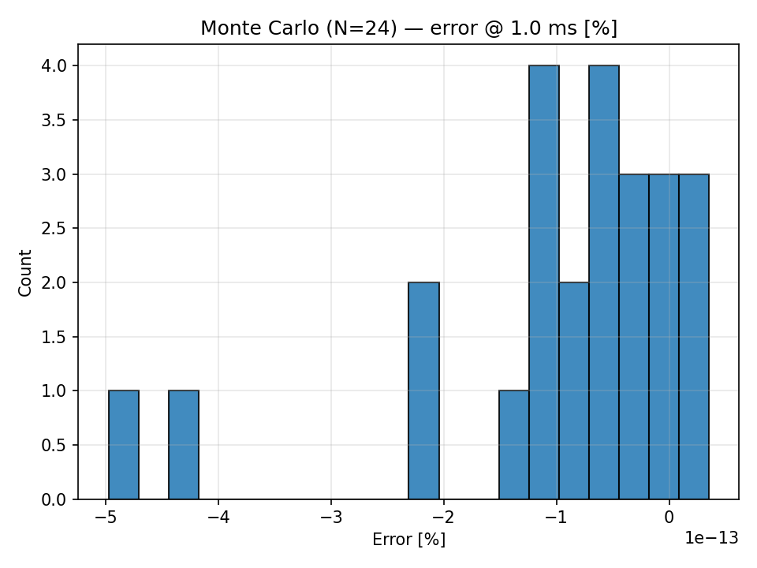

Monte Carlo
Run Monte Carlo by mapping components to distributions and a per-trial analysis:

from spicelab.core.circuit import Circuit
from spicelab.core.components import Vdc, Resistor, Capacitor
from spicelab.core.net import GND
from spicelab.analysis import OP, monte_carlo, NormalPct
c = Circuit("rc")
V1, R1, C1 = Vdc("1", 5.0), Resistor("1", "1k"), Capacitor("1", "100n")
c.add(V1, R1, C1)
c.connect(V1.ports[0], R1.ports[0])
c.connect(R1.ports[1], C1.ports[0])
c.connect(V1.ports[1], GND)
c.connect(C1.ports[1], GND)
mc = monte_carlo(
circuit=c,
mapping={R1: NormalPct(0.05)},
n=16,
analysis_factory=lambda: OP(),
seed=123,
)
df = mc.to_dataframe(param_prefix="param_")
print(df.head())
Tips:
- Use workers for parallel execution: monte_carlo(..., workers=4).
- Provide a metric function to compute scalar KPIs per trial, or set y=[...] and sample_at to extract trace values.
Progress bar / callback
Add a lightweight progress bar to stderr:
mc = monte_carlo(
circuit=c,
mapping={R1: NormalPct(0.01)},
n=1000,
analysis_factory=lambda: OP(),
progress=True, # prints: "MC: 317/1000 (31%)"
)
Or provide your own callback (done, total):
def cb(done: int, total: int) -> None:
print(f"{done}/{total}", end="\r")
mc = monte_carlo(c, mapping={R1: NormalPct(0.01)}, n=1000,
analysis_factory=lambda: OP(), progress=cb)